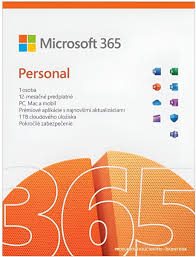

Licencia
Licencia softvéru je právna dohoda medzi autorom softvéru a používateľom, ktorá stanovuje, ako môže byť softvér používaný.
Obsah licencie:
- Kto môže softvér používať
- Na koľkých zariadeniach
- Či môžeš softvér upravovať alebo zdieľať
- Doba platnosti licencie
- Práva a obmedzenia
Základné druhy softvérových licencií
a)Proprietárna (uzavretá) licencia
- Vlastníkom softvéru je vývojár alebo firma.
- Používateľ platí za možnosť používať softvér, ale nemá prístup ku zdrojovému kódu.
- Nie je dovolené softvér upravovať ani šíriť ďalej.
Napríklad:Microsoft Windows,Adobe Photoshop,AutoCAD...
b)Freeware
- Softvér je zadarmo, ale nie je open-source.
- Často má obmedzené funkcie alebo je určený len na nekomerčné použitie.
Napríklad:Avast Free Antivirus,Skype,PDF Reade...
c)Open-source licencia
- Zdrojový kód je verejne dostupný.
- Používateľ môže softvér upravovať, kopírovať a šíriť.
- Licencia však často obsahuje podmienky (napr. nutnosť uviesť pôvodného autora).
Najznámejšie open-source licencie:
- GPL (GNU General Public License)-Zmenený softvér musí byť tiež open-source
- MIT License-Veľmi voľná, umožňuje aj komerčné využitie
- Apache 2.0-Umožňuje úpravy a šírenie, obsahuje aj ochranu patentov
d)Shareware
- Softvér sa poskytuje na skúšobné obdobie.
- Po uplynutí lehoty je potrebné zaplatiť licenciu.
Napríklad:WinRAR, Total Commander
